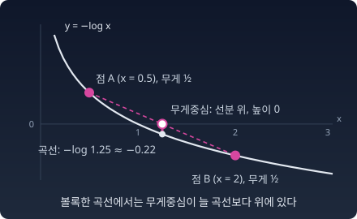

KL ≥ 0: 볼록함수 하나에서 나오는 부등식
“H(p, q) = H(p) + KL(p‖q)라면, KL이 음수가 되어 모형이 현실 자신보다 싸게 부호화할(결과를 더 짧은 0·1 부호로 적을) 수도 있을까?”
KL이 늘 0 이상이고, 0이면 두 분포가 같다는 것을 지금 증명한다.
한 줄 증명
−log는 아래로 볼록한 함수다. 곡선 위 두 점을 이은 선분은 늘 곡선보다 위에 있다. 점이 여럿이어도 같다. 곡선 위 점들에 무게를 주고 무게중심을 잡으면, 그 무게중심은 곡선보다 위에 있다. 이것이 젠센 부등식이다. 여기서는 이 그림 하나만 쓴다.

점들의 가로 좌표를 qi/pi, 무게를 pi로 잡는다.
왼쪽은 곡선 위 점들의 무게중심 높이다. 오른쪽 −log Σqi는 무게중심의 가로 좌표에서 잰 곡선의 높이다. 합은 pi > 0인 결과만 도니 Σqi ≤ 1이고, −log는 감소함수라 마지막 부등식이 나온다.
등호는 언제인가. 첫 부등식은 모든 점이 한 자리에 모일 때만 등호다. qi/pi가 모두 같다는 뜻이다. 둘째 부등식은 Σqi = 1일 때 등호다. 둘을 합치면 q = p. KL = 0이면 두 분포가 같다.
H(p, q) ≥ H(p)도 따라 나온다. 현실의 빈도를 정확히 아는 부호표보다 싸게 부호화하는 방법은 없다. 이것을 깁스 부등식이라 부른다.
불러오는 중…
파이썬
import numpy as np
p = np.array([0.5, 0.3, 0.2]); q = np.array([0.25, 0.25, 0.5])
x = q / p # 곡선 위 점들의 가로 좌표
print("점의 x 좌표 q/p:", np.round(x, 3), " p로 낸 무게중심 x:", round(np.sum(p * x), 10))
print("무게중심 높이 Σ p·(-log x) =", round(np.sum(p * -np.log(x)), 4), "= KL(p‖q)")
rng = np.random.default_rng(1)
P = rng.dirichlet(np.ones(5), 100_000)
Q = rng.dirichlet(np.ones(5), 100_000)
KL = np.sum(P * np.log(P / Q), axis=1)
print(f"무작위 10만 쌍에서 KL 의 최솟값 {KL.min():.4f}")
# 점의 x 좌표 q/p: [0.5 0.833 2.5 ] p로 낸 무게중심 x: 1.0
# 무게중심 높이 Σ p·(-log x) = 0.218 = KL(p‖q)
# 무작위 10만 쌍에서 KL 의 최솟값 0.0007
무게중심의 가로 좌표는 늘 정확히 1이다. 그 자리의 곡선 높이는 −log 1 = 0이다. KL은 무게중심이 곡선보다 얼마나 높이 떠 있는지다.
f-발산 — 볼록함수 하나에 발산 하나
“KL ≥ 0의 증명에 쓴 것은 −log가 볼록하다는 것뿐이었다. 그렇다면 다른 볼록함수로도 같은 증명이 되지 않을까?”
KL 발산 하나만으로 충분하지 않을까? KL에는 약점이 하나 있다. 현실에서 일어나는 결과에 모형이 0을 주면 KL은 무한대가 된다. 생성 모델을 학습시킬 때 이 약점이 실제로 걸린다. 원래의 GAN(생성적 적대 신경망, 2014)은 판별자와 겨루는 목적함수가 KL 대신 젠센–섀넌 발산을 줄이도록 짜여 있었다. 젠센–섀넌 발산은 무한대가 되지는 않지만, 두 분포가 전혀 겹치지 않으면 얼마나 떨어져 있든 늘 log 2로 같다. 2017년의 Wasserstein GAN 논문은 한 직선 위에 고르게 퍼진 분포와 그것을 옆으로 θ만큼 옮긴 분포를 예로 들었다. θ가 0이 아니면 KL은 무한대, 젠센–섀넌 발산은 log 2로 한결같아서, θ를 어느 쪽으로 얼마나 줄여야 하는지 알려 주지 못한다. 그래서 이 논문은 흙더미를 옮기는 비용으로 재는 바서슈타인 거리를 썼다. 이 예에서 바서슈타인 거리는 |θ|로, θ가 줄어드는 만큼 줄어든다. 어떤 자를 쓰느냐에 따라 학습이 무엇에 민감해지는지가 달라진다. 스코어 매칭이 줄이는 피셔 발산도 이런 다른 자 가운데 하나다.
KL의 증명을 그대로 일반화한 가족이 있다.
증명은 KL 때와 같다. f가 볼록이니 무게 qi로 낸 무게중심이 곡선 위에 있고, Df ≥ f(Σ qi · pi/qi) = f(1) = 0이다.
f(x) = x log x를 넣으면 KL(p‖q)가 나온다. f(x) = −log x를 넣으면 방향이 뒤집힌 KL(q‖p)가 나온다. f(x) = (x − 1)²를 넣으면 카이제곱 발산 χ² = Σ(pi − qi)²/qi가 나온다. 젠센–섀넌 발산과 헬링거 거리도 이 가족이다. 바서슈타인 거리와 피셔 발산은 이 가족이 아니다. 자는 f-발산보다 더 많다.
비유 — 망치와 공구함
−log는 좋은 망치다. 못을 잘 박는다. f-발산은 같은 손잡이(볼록성)에 머리만 바꿔 끼우는 공구 세트다.
파이썬
import numpy as np
p = np.array([0.5, 0.3, 0.2])
q = np.array([0.25, 0.25, 0.5])
def D_f(f, p, q): # D_f(p‖q) = Σ q f(p/q)
return np.sum(q * f(p / q))
fs = {
"KL f(x)=x log x": lambda x: x * np.log(x),
"역방향KL f(x)=-log x": lambda x: -np.log(x),
"χ² f(x)=(x-1)²": lambda x: (x - 1)**2,
"헬링거² f(x)=(√x-1)²": lambda x: (np.sqrt(x) - 1)**2,
}
for name, f in fs.items():
print(f"{name} D_f = {D_f(f, p, q):.4f}")
print(f"확인: KL(p‖q)={np.sum(p*np.log(p/q)):.4f} KL(q‖p)={np.sum(q*np.log(q/p)):.4f} Σ(p-q)²/q={np.sum((p-q)**2/q):.4f}")
# KL f(x)=x log x D_f = 0.2180
# 역방향KL f(x)=-log x D_f = 0.2393
# χ² f(x)=(x-1)² D_f = 0.4400
# 헬링거² f(x)=(√x-1)² D_f = 0.1127
# 확인: KL(p‖q)=0.2180 KL(q‖p)=0.2393 Σ(p-q)²/q=0.4400
볼록함수마다 발산이 하나씩 태어나고, 모두 0 이상이다.
수확
“KL ≥ 0은 −log가 볼록하다는 사실 하나에서 나온다.”
“−log는 강력하다. 그러나 하나의 사례일 뿐이다. 볼록함수의 세계 전체를 열면 더 많은 것이 보인다.”
문제 10. 50% 오르고 50% 내린 주식
어떤 주식이 첫해에 50% 오르고 다음 해에 50% 내렸다. (가) 두 해 수익률의 평균은 몇 %이고, 원금 100만 원은 실제로 얼마가 되는가? (나) 한 해마다 곱해진 배수 x₁ = 1.5, x₂ = 0.5에 대해, −log x의 평균과 배수의 평균에서 잰 −log를 견주어라. 어느 쪽이 크고, 차이는 얼마인가(nat)?
함께 풀기

+50%와 −50%니까 평균 0%. 본전이에요.

100만 원을 넣었으면 두 해 뒤에 얼마예요?

150만 원이 됐다가 그 반이니까 75만 원이요. 평균 0%인데 25만 원이 없어졌어요.

수익률은 더해지는 게 아니라 배수로 곱해지니까 산술평균이 틀린 자야. (나)는 −ln 1.5 ≈ −0.405, −ln 0.5 ≈ 0.693이라 평균이 0.144, 배수의 평균 (1.5 + 0.5)/2 = 1에서 잰 −ln은 0. −log의 평균이 0.144만큼 커요.
무게 ½, ½에 가로 좌표 1.5와 0.5, 무게중심의 가로 좌표는 1. 어디서 본 그림이죠?
KL 증명 그림이요. 가로 좌표 qi/pi의 무게중심이 늘 1이었죠. p = (½, ½)로 두고 qi = pixi로 두면 q = (0.75, 0.25)이고, KL(p‖q)가 바로 이 0.144예요.
0.144는 해마다 곱해진 배수가 고르지 않아서 잃은 몫이네요. 두 해 모두 배수가 1이었으면 0이고요. 조별 과제에서 한 번은 점수 1.5배 가산, 한 번은 0.5배 감산을 받으면 「평균 1배」라 본전 같은데, 실제 점수는 0.75배로 깎이는 거랑 같아요.
문제 11. 등호가 늘 서는 발산
f(x) = x − 1도 볼록함수이고 f(1) = 0이다. (가) 이 f로 만든 Df(p‖q)를 위 파이썬의 p = (0.5, 0.3, 0.2), q = (0.25, 0.25, 0.5)로 계산하라. (나) KL에서는 「발산이 0이면 두 분포가 같다」가 성립했다. 이 f에서도 성립하는가? 성립하지 않는다면, 한 줄 증명의 등호 조건에는 볼록성 말고 무엇이 더 쓰였는가?
함께 풀기
코드로 돌렸더니 0이 나왔어요. 다른 p, q를 넣어도 다 0이에요. 발산이 0이니까 p = q여야 하는데 둘은 분명히 다르잖아요. 제 코드가 틀렸나 봐요.
코드는 맞아. Σ qi(pi/qi − 1) = Σ pi − Σ qi = 1 − 1 = 0이니까 늘 0이야. 문제는 f 쪽이지. x − 1은 직선이니까 볼록함수가 아니잖아.
볼록의 정의가 뭐였죠? 곡선 위 두 점을 이은 선분이…

…곡선보다 아래로 내려가지 않는다. 직선이면 선분이 곡선과 겹치니까 볼록이 맞네요. 아래로 내려가지 않는다는 거지, 늘 위에 떠 있다는 게 아니었어요.
그럼 KL의 한 줄 증명에서 「모든 점이 한 자리에 모일 때만 등호」는 −log의 어떤 성질에서 나왔어요?
점들이 흩어져 있으면 무게중심이 곡선보다 떠 있어야 해요. 곧은 구간 없이 어디서나 휘어 있어서, 두 점을 이은 선분이 곡선과 양 끝에서만 만나는 성질이요. 엄격하게 볼록하다고 하죠. −log는 엄격하게 볼록이라 KL = 0이면 p = q까지 나오는데, x − 1은 곧기만 해서 아무것도 가려내지 못해요.
f-발산의 조건에 「볼록, f(1) = 0」만 적어 두면 늘 0 이상이긴 하지만, 두 분포를 가려내는 자가 되려면 조건이 하나 더 필요하네요. 보고서에 「0 이상」만 확인하고 「0이면 같다」를 안 따졌으면 이런 쓸모없는 자를 통과시킬 뻔했어요.
해석학에서 볼록과 엄격한 볼록을 왜 굳이 따로 정의하나 했는데, 등호 조건 때문이었어요.
문제 12. 엔트로피보다 낮은 훈련 loss
결과가 셋인 현실 분포 p = (0.5, 0.3, 0.2)에서 표본 10개를 뽑았더니 결과 1, 2, 3이 6, 3, 1번 나왔다. 모델이 이 표본을 그대로 외워 경험분포 p̂ = (0.6, 0.3, 0.1)을 내놓는다. (가) 이 모델의 훈련 loss(표본 10개에서 낸 평균 음의 로그우도, nat)를 구하고, 현실의 엔트로피 H(p)와 견주어라. (나) 새로 뽑은 표본이 충분히 많을 때 그 표본에서의 평균 loss는 얼마인가? (다) 현실과 똑같은 모형 q = p라면 같은 10개에서의 훈련 loss는 얼마인가? (라) (가)는 「교차엔트로피는 엔트로피보다 작아질 수 없다」와 부딪히는가? (위 위젯의 「문제 12의 p와 p̂」 쌍으로 두 분포 사이의 KL을 볼 수 있다.)
함께 풀기
훈련 loss는 −(0.6 ln 0.6 + 0.3 ln 0.3 + 0.1 ln 0.1) ≈ 0.898 nat이에요. 현실의 엔트로피는 1.030이고요. 바닥을 뚫었어요! 이 모델이 현실보다 더 잘 아는 거예요.
새 표본에서는요?
새 표본은 p에서 나오니까 −(0.5 ln 0.6 + 0.3 ln 0.3 + 0.2 ln 0.1) ≈ 1.077. 어, 1.030보다 높아졌네요.
1.077 − 1.030 = 0.047이 KL(p‖p̂)이니까 이건 깁스 부등식 그대로야. 이상한 건 (가)지. 교차엔트로피는 엔트로피보다 작아질 수 없다고 증명했는데.
한 줄 증명에서 무게로 쓴 분포와, 비교한 엔트로피의 분포는 무엇이었죠? 훈련 loss에서는요?

증명은 H(p, q) ≥ H(p), 무게와 비교 대상이 같은 p예요. 훈련 loss는 무게가 경험분포인 H(p̂, q)니까, 이 증명이 말해 주는 바닥은 H(p̂) = 0.898이에요. 현실의 H(p)가 아니고요. (가)는 바닥 H(p̂)에 딱 닿은 거라 부딪히지 않아요.
(다)도 해 봐요. 현실을 정확히 아는 모형은 훈련 loss가 얼마죠?

−(0.6 ln 0.5 + 0.3 ln 0.3 + 0.1 ln 0.2) ≈ 0.938. 외운 모델의 0.898보다 나빠요! 훈련 loss만 보면 정답인 모형이 외운 모델에게 져요.
그래요. 훈련 loss의 바닥은 표본이 정해요. 현실까지 얼마나 먼지는 새 표본에서 잰 loss, 곧 H(p) + KL(p‖q)가 알려 주고요.
그래서 검증 세트를 따로 두는 거네요. 연습문제를 답까지 외운 친구가 연습 점수는 만점인데 시험에서 무너지는 거랑 같아요.
통계 시간에 표본 평균을 같은 표본에 다시 쓰면 흩어짐이 실제보다 작게 나온다고 배웠는데, 표본에 맞춘 것으로 같은 표본을 재면 늘 좋게 나온다는 같은 이야기네요.